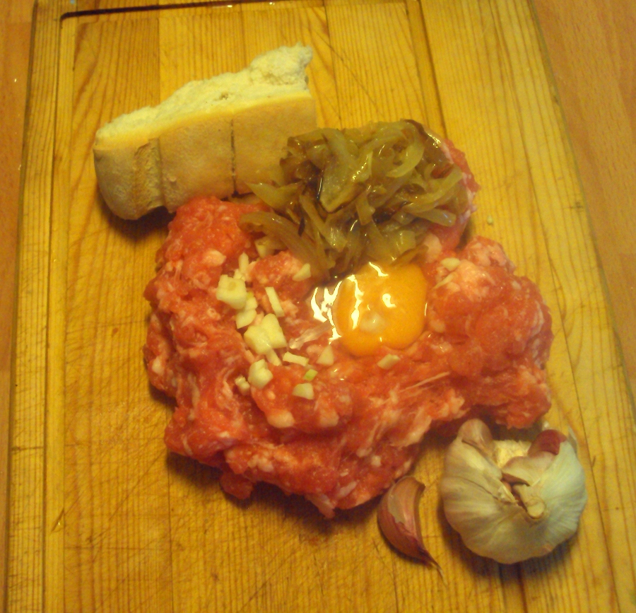
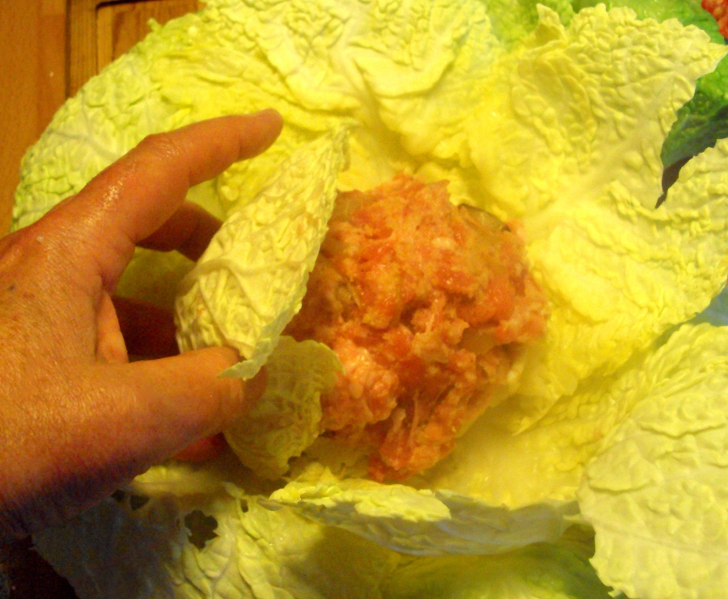
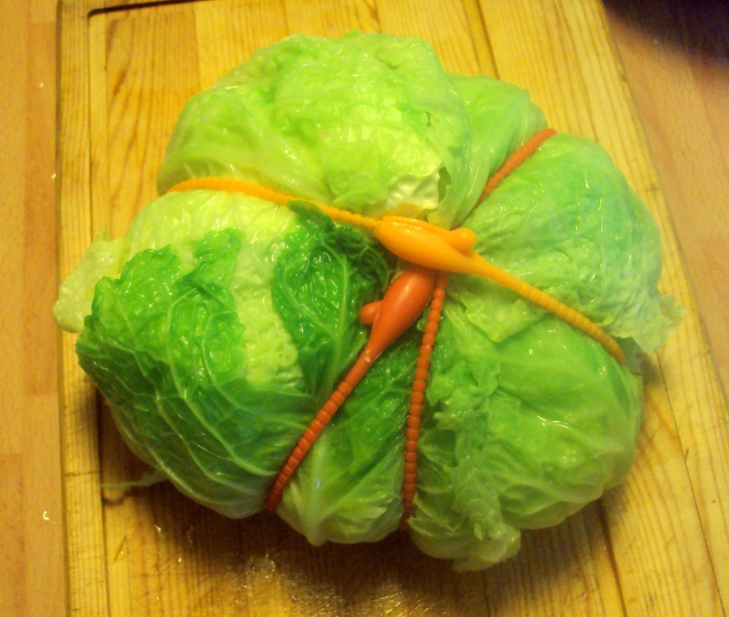
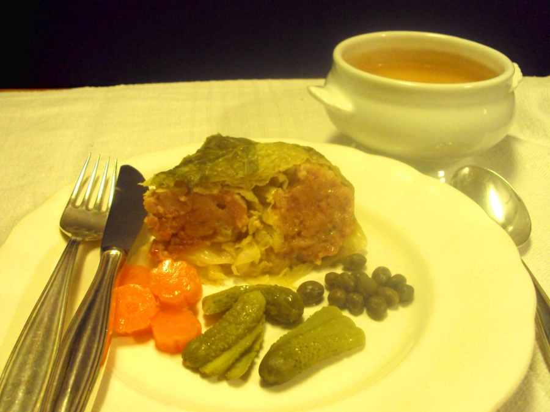

REPOLLO RELLENO
Ingredientes
- 1 repollo rizado mediano de unos 3/4 de k
- 1 cuch de aceite de oliva virgen extra
- 1 cebolla, picada
- 275 g de salchichas
- 1 miga de pan de la víspera de 20-30 g
- 1 diente de ajo, picado
- 1 huevo
- Sal, pimienta
- Agua
- 3-4 zanahorias tiernas
- 2 cuch de alcaparras
- 2 cuch de pepinillos
- Aceite de oliva
- Mostaza --si se desea
El repollo, una de las múltiples coles de la familia de las crucíferas, también llamadas brásicas o de la familia brasicae, es una más de las verduras a las que les viene bien el frío, las temporadas del otoño y del invierno. Se pueden cultivar en primavera y verano, pero sus aromas azufrados suben varios tantos con el calor y dan tintes ordinarios a sus hojas. Esta forma de prepararlo, muy sabrosa, lo convierte en un plato único, más bien en una comida completa, con caldo, verduras y carne.

Poner una cazuela grande con agua abundante a hervir. También calentar a fuego suave el aceite en una sartén y echar la cebolla picada o en lonchas, para que se sofría. Remover de vez en vez.
Retirar las hojas más viejas al repollo y vaciar un poco el troncho.

Lavarlo y, entero, echarlo en la cazuela llena de agua ya hirviente. Escaldarlo por la parte inferior durante 5 minutos, darle la vuelta y escaldarlo por la de arriba otros 3-4 minutos. Sacarlo con una espumadera grande, refrescar bajo el agua fría puesto en un colador y pasarlo, ya escurrido, a una tabla, con las hojas hacia arriba.

Ir abriendo las hojas del repollo, como si fuera una rosa, con cuidado de no romperlas o romperlas lo menos posible –para eso se ha escaldado, también para suavizar su sabor– y sin que se suelten del tallo inferior que se conserva.

Cuando quede sólo el corazón redondo del repollo y no se pueda abrir más, retirarlo cortándolo por su base y picarlo. Añadirlo a la sartén de la cebolla, que ya estará medio sofrita, revolver y dejar que siga sobre el fuego un rato.

En una tabla vaciar las salchichas. No añadir sal, ya tiene el picadillo sal y muchas especias. Revolver con el pan remojado en agua y desmenuzado, el huevo, el ajo picado y el sofrito de cebolla y repollo.


En el hueco central del repollo colocar una bola con 1/4 del picadillo de carne. Cerrar las 3 primeras hojas de repollo sobre la bola de carne. Ir repartiendo pequeñas porciones de la carne alrededor de las 3 hojas ahora cerradas y cerrar las siguientes 3, apretando todo lo que se pueda. Repetir la operación hasta que se acabe la carne y sólo queden sin relleno las 3 hojas exteriores del repollo o alguna más.


Cerrar bien las últimas hojas sujetándolas con fuerza y atarlas con tiras de silicona –o hilo de bramante o de algodón de cocina–, incluso envolver el repollo en una gasa grande atada, es como se hacía antiguamente.

Introducir el repollo ya relleno en una cazuela en la que quede un poco holgado. Rellenar de agua hasta que casi lo cubra y colocar en los lados, encima del repollo, las zanahorias peladas. Salar el líquido con ¼ de cuch de sal y acercar al fuego mediano.


El repollo deberá cocer a hervor suave pero contínuo medio tapado durante 1 hora y ½ o un poco más, pero será necesario reponer el agua que se vaya consumiendo. Probar el caldo de sal a media cocción y añadir más si estuviera soso.
Sacar el repollo y las zanahorias. Colocarlos en un colador sobre un cuenco o la propia sopera.

Colar el caldo que haya quedado en la cazuela sobre la sopera. El caldo estará bastante claro y nada graso, siempre que las salchichas sean buenas, de un carnicero o establecimiento de confianza.
Servir el repollo cortado en gajos, como cuñas, con su caldo en tazas calientes y acompañar con pepinillos, alcaparras, aceite de oliva virgen para que cada uno se añada y, si se desea, mostaza.
Una buena cerveza clara o un vino blanco frescos acompañan muy bien este plato único magnífico, sencillo y barato.

CONSEJOS: Si no se quiere hacer, porque es demasiada cantidad, todo un repollo relleno, disminuir las cantidades de relleno según los comensales y utilizar hojas de repollo que se sueltan con cuidado, para escaldarlas a continuación en agua hirviente. Así pierden su rigidez y se pueden doblan con facilidad, después de haberles retirado el tallo grueso del centro. Se atan, con siliconas o cordón de cocina bien rellenas y se cocinan, en un caldo, como el repollo completo. Como tardarán menos en su cocción y el caldo resultante puede ser flojo, se puede poner en el fondo de la cazuela en la que se vayan a cocinar, bien sofritas, unas alitas de pollo campero o unas costillas de cerdo.


Si no se quiere el relleno con carne de salchichas, comprar carne picada de ternera, hasta de cerdo o de gallina, que tenga algo de grasa. Si la carne no es de las salchichas, habrá que especiar el picadillo con mucha cantidad de macis o nuez moscada, un poco de pimienta y sal al gusto. El macis lo forman la fibras secas, el arilo, que recubre la nuez de la nuez moscada y, ya molido, es la especia más abundante del picadillo de salchichas de toda Europa, incluido nuestro país, desde hace muchos siglos, desde que los romanos preparaban sus salchichas, pero se puede sustituir por nuez moscada, que tiene aroma parecido –es del mismo árbol– y es más fácil de encontrar.